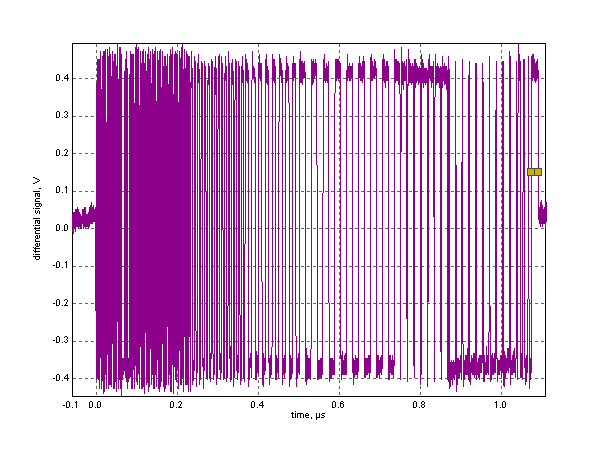
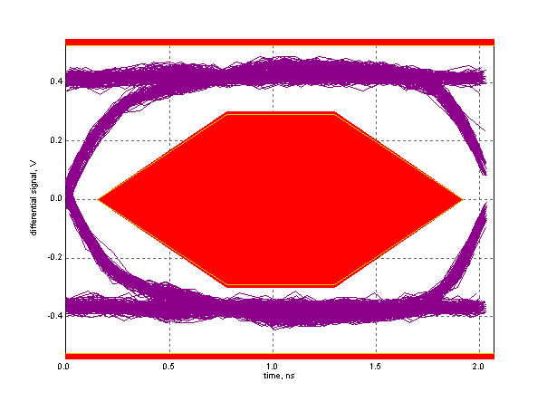

Near End High Speed Signal Quality Test
Results for 0x00f8037b_QFP_HOST_eye
For details on test setup, methodology, and performance criteria, please consult the signal quality test description at the USB-IF Compliance Program web page.
Required Tests
- Overall result: pass!
- Sync result:
sync passes
- Signal eye:
eye passes
- EOP width: 8.00 bits
EOP width passes
- Measured signaling rate: 480.0080 MHz
signal rate passes
- Edge Monotonicity: 0 mV
Monotonic Edge passes
- Rising Edge Rate: 1503.31 V/us (425.73 ps equivalent risetime)
passes
- Falling Edge Rate: 1428.92 V/us (447.89 ps equivalent falltime)
passes
Additional Information
- Consecutive jitter range: -43.837 ps to 43.582 ps, RMS jitter 23.168 ps
- Paired JK jitter range: -37.749 ps to 30.762 ps, RMS jitter 11.338 ps
- Paired KJ jitter range: -32.279 ps to 26.737 ps, RMS jitter 13.253 ps
SignalData and Eye


Tracking Information
- Oscilloscope sample rate: 12.500 GS/s
- Data file: E:\MTD\8136_QFT_Host\0x00f8037b_QFP_HOST_eye.tsv
- Test version: 1.20.00
- Analysis performed: Thu Oct 02 15:08:08 2014